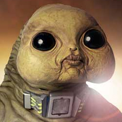

| Home | The Doctors | The Villains | |
|
|||
|
The Slitheen are a family of massive, bipedal extraterrestrials from the British science fiction television series Doctor Who and are adversaries of the Ninth Doctor and later Sarah Jane Smith. The Slitheen are of the egg laying calcium-based Raxacoricofallapatorianrace native to Raxacoricofallapatorius, though many use "Slitheen" in referring to the race in general. Instinctive hunters trained to kill at a young age, Slitheen are a ruthless criminal sect whose main motivation is profit. They are also convicted on their homeworld, unable to return to their planet due to a death penalty. The Slitheen first appeared in the 2005 series episodes "Aliens of London" and "World War Three", and subsequently recur in later episodes of both Doctor Who and spin-off series The Sarah Jane Adventures. All adult Slitheen are eight feet tall, rather fat with long forearms, powerful claws, and infantile face. They do not appear to have eyelids, but have a nictitating membrane. They have a highly developed sense of smell, able to track a single target across a few city blocks, smell adrenaline and hormones in people, and can sense if one of their own dies. Female Raxacoricofallapatorians can produce poisons within their bodies which they then use against their enemies. Known methods of delivery include a poisoned dart that is formed in the finger and then fired and exhalation of poisoned breath. Members of the Slitheen family have green skin, though there is variation in the skin tone of other Raxacoricofallapatorian families. In The Sarah Jane Adventures episode, The Gift, members of the Slitheen-Blathereen family group are seen to have orange skin. |